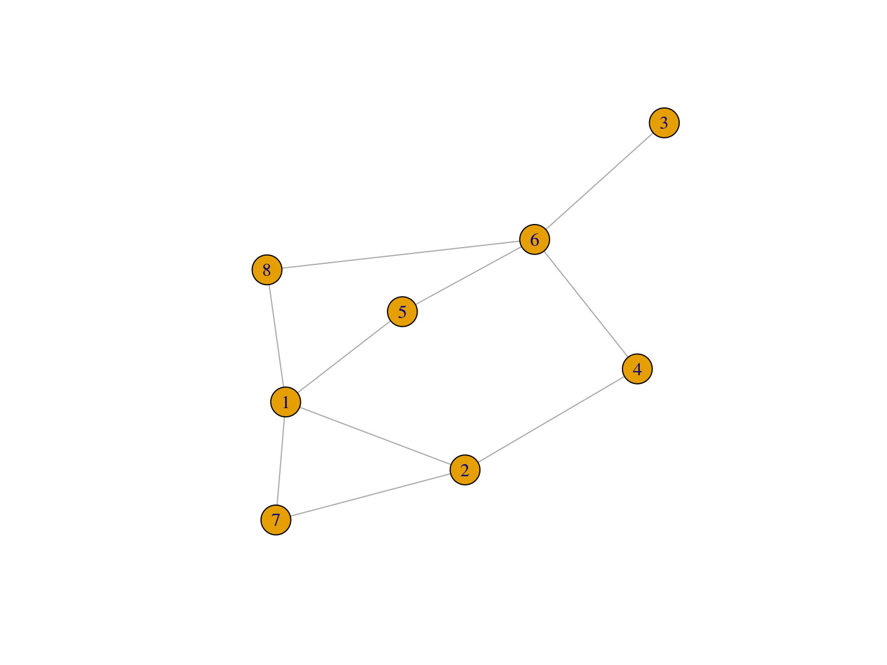
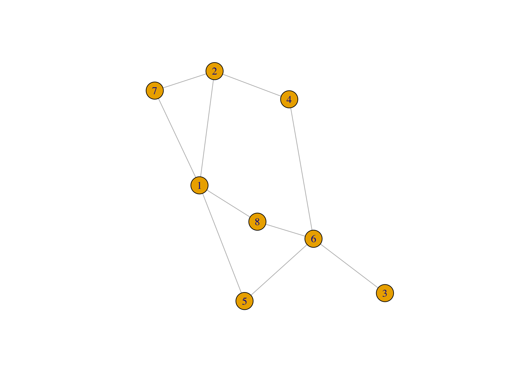
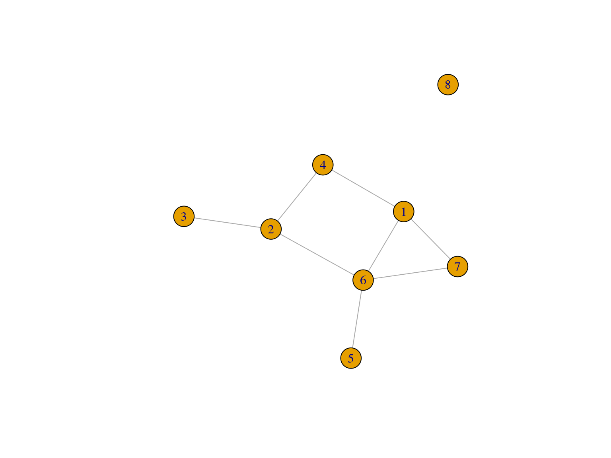
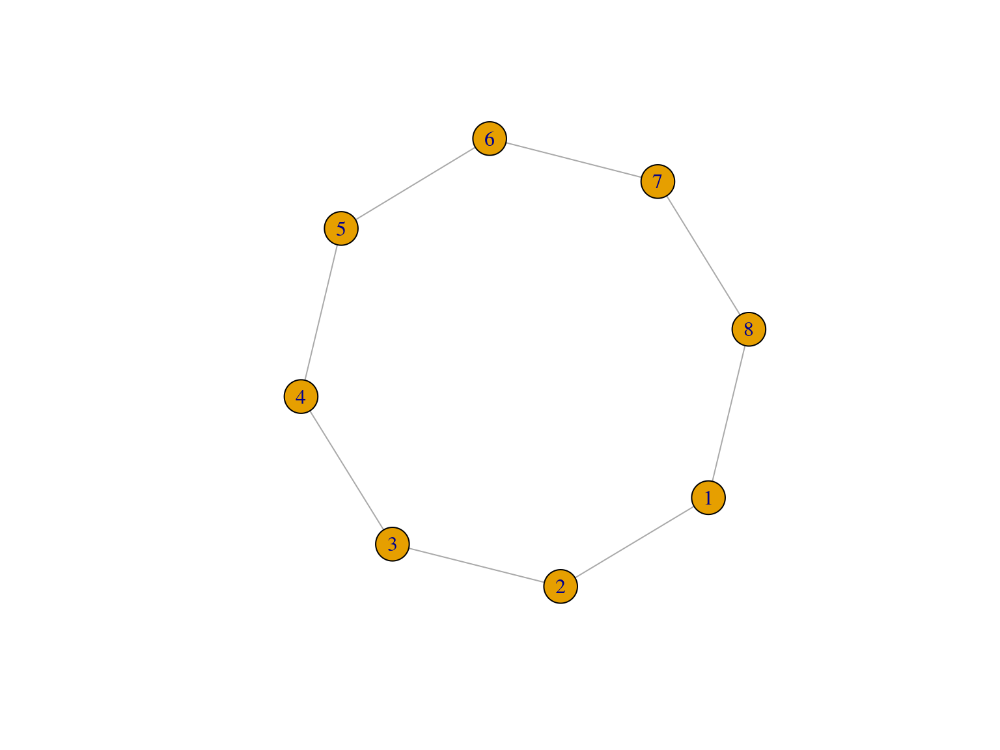
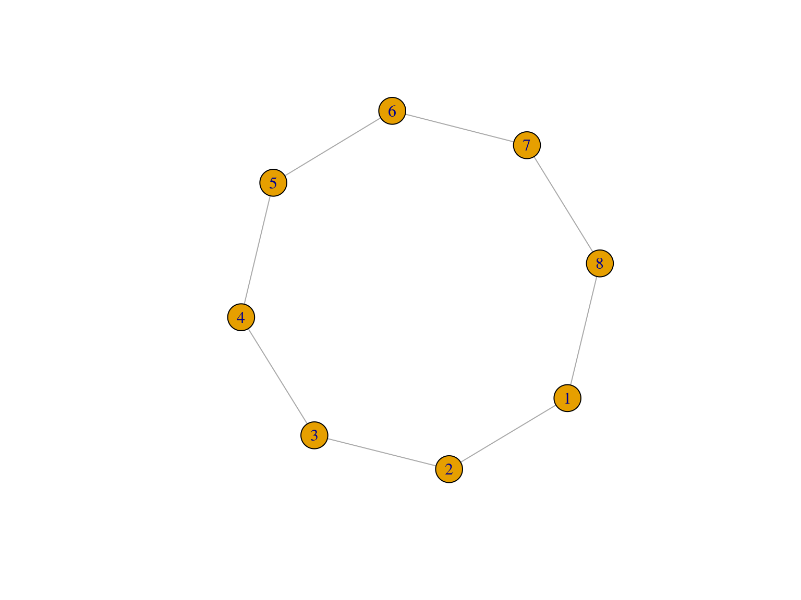

COM 411
Degree Centrality
- Counts the number of edges each node has
- In, out, or all

## [1] "Degree Centrality:"## 1 2 3 4 5 6 7 8
## 4 3 1 2 2 4 2 2Closeness Centrality
Average distance to all other nodes


Betweenness Centrality
Counts the number of shortest paths that go through each node. This is based on the value of being in a “structural hole”
Which of these has the highest betweenness?

Eigenvector Centrality
Who is connected to the most important people? If you have only one friend, but that friend is the President, then you are still powerful.


Centralization
How unequal is the centrality between nodes?
 
